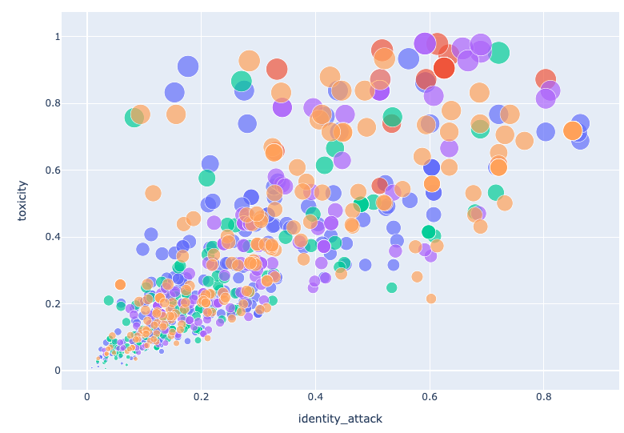

Visualizations of Toxicity in Tweets
This project displays data visualizations about toxicity on Twitter for various high profile politicians. The data was collected by querying the Twitter API periodically and dates back to early 2019. We queried the Twitter API and searched for key words including the politician's first and last name and their twitter handles. In order to get information about the sentiment of the tweet, we used the Perspective API, an API used to detect abuse and harassment online. Perspective API has the ability to detect multiple attributes. We used toxicity, identity attack, and sexually explicit. Perspective API takes comment text as input and returns a "score" from 0 to 1 that indicates the probability that the comment is similar to toxic comments it's seen in the past. A score of 0 signifies 0% probability that the comment is toxic, a score of 1 signifies 100% probability that the comment is toxic, and a score of 0.5 signifies a 50% probability that the comment is toxic (i.e., that the model is not sure). It should be noted that there are known unintended biases within the Perspective API.
Comparing the levels of toxic, flirtatious, and identity attack tweets against five leading democratic politicians. Use the legend to choose which politician’s twitter mentions you would like to browse.
In Graph A we can see that attacks against female politicians are different than their male counterparts. Elizabeth Warren, Alexandria Ocasio-Cortez and Nancy Pelosi are more likely to have higher levels of identity attacks or flirtatious tweets when they are mentioned on twitter. However, Joe Biden had a higher level of sexually-explicit twitter mentions than Bernie Sanders— mostly based on sexual harassment and abuse allegations against the Democratic presidential candidate. All of the politicians had similar levels of toxicity among twitter mentions, which demonstrates that toxicity on Twitter is not always gender-based.
Toggle between two views: absolute number of tweets directed at politicians categorized as “toxic,” “sexually explicit” or “identity attack”; and number of tweets directed at politicians for each category as a percentage of all tweets directed at the politician.
Graph B shows the absolute number of tweets that were tweeted “@username” for each politician. For example, tweets counted for Chuck Schumer would be any tweet that was tweeted @SenSchumer or included his full name in the tweet.
Using a language processing API, we categorized each tweet, if applicable, into one of the three categories shown: toxicity, sexually explicit or identity attack. The two views represent total tweets (absolute value of tweets defined as “toxic,” “sexually explicit” or “identity attack” according to the API) or proportional tweets (number of tweets defined as “toxic,” “sexually explicit” and “identity attack” divided by total tweets).
For politicians in the chart above, both House Speaker Nancy Pelosi and President Donald Trump have high levels of generally toxic tweets directed at them, with 14% and 12% of tweets categorized as toxic, respectively. Representative Ocasio-Cortez and Senator Harris both had 4% of tweets directed at them fall into the “identity attack” bucket.
Of the men and women shown on this chart, 5% of tweets directed at presumptive Democratic Party Nominee Joe Biden were defined as “sexually explicit,” compared to 2% for Pete Buttigieg, 3% for Bernie Sanders and 2% for Kamala Harris. Both highest scorers for the “sexually explicit” categories were men.
To learn more about the ways toxicity and identity attacks interact with each other, we plotted each tweets identity attack score vs its toxicity score. You can see that while most Tweets are in the bottom right, there are a fair few that are both very toxic and have a large identity attack.
Click to view interactive version
Proportion of toxic tweets by gender. A toxic tweet has a .7 or higher toxicity score.